12 页主讲 + 2 页备查 · 点击任意页面打开独立 SVG · 中文字体：Noto Sans CJK SC（回退 Microsoft YaHei）
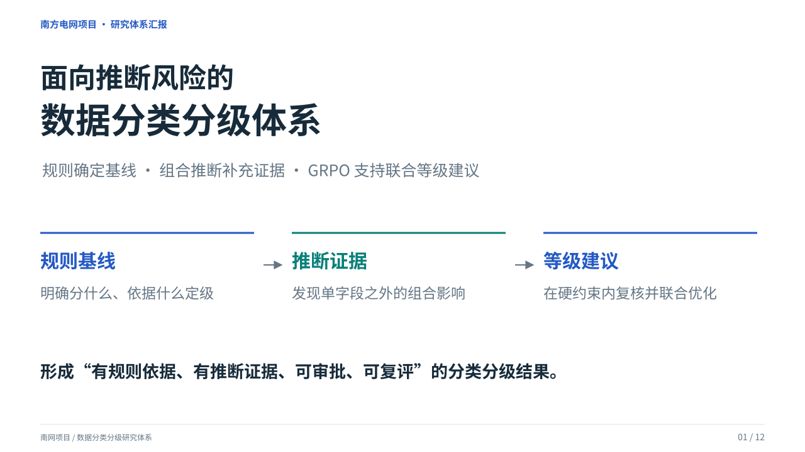
01 · 面向推断风险的数据分类分级体系
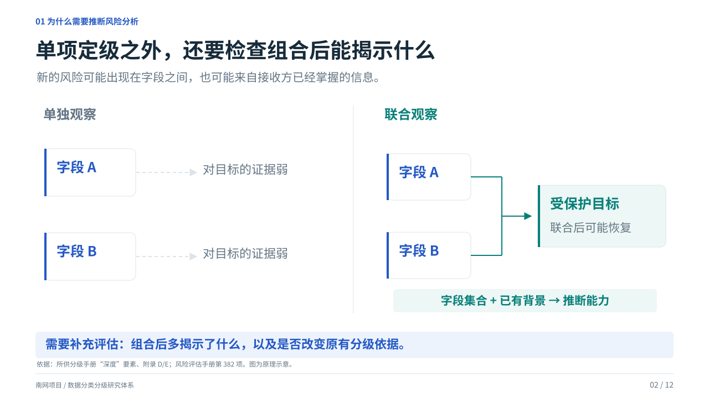
02 · 单项定级之外，还要检查组合后能揭示什么
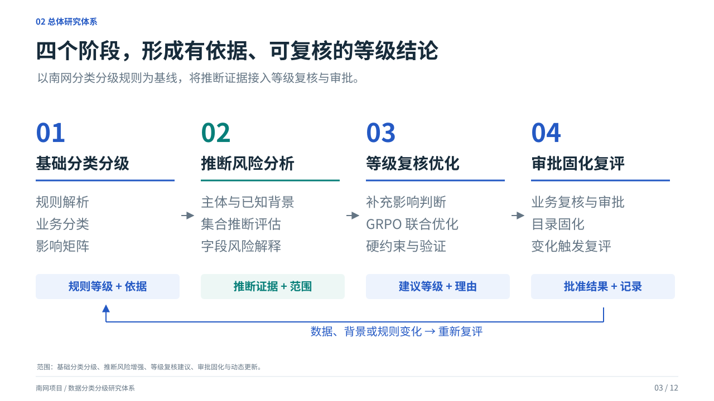
03 · 四个阶段，形成有依据、可复核的等级结论
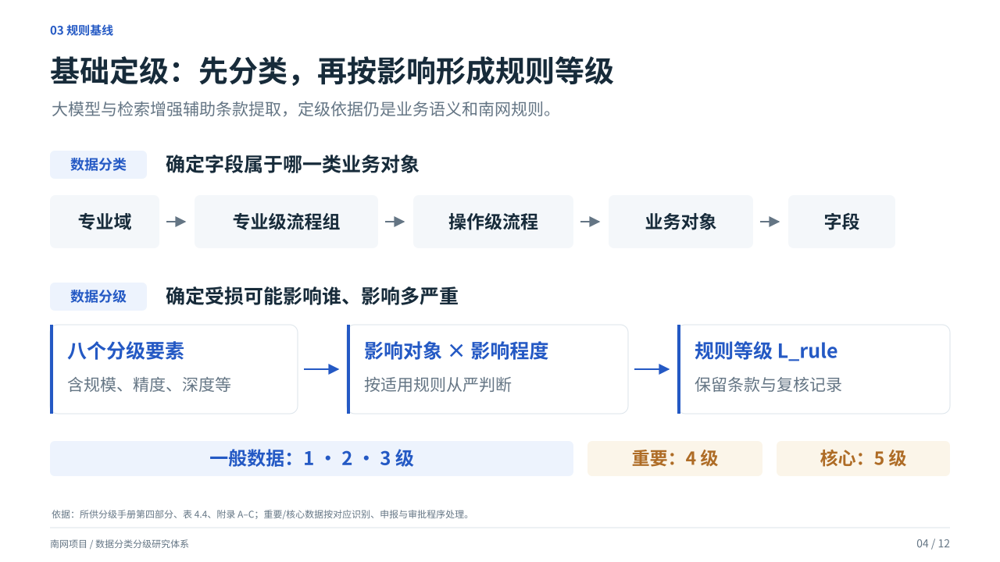
04 · 基础定级：先分类，再按影响形成规则等级
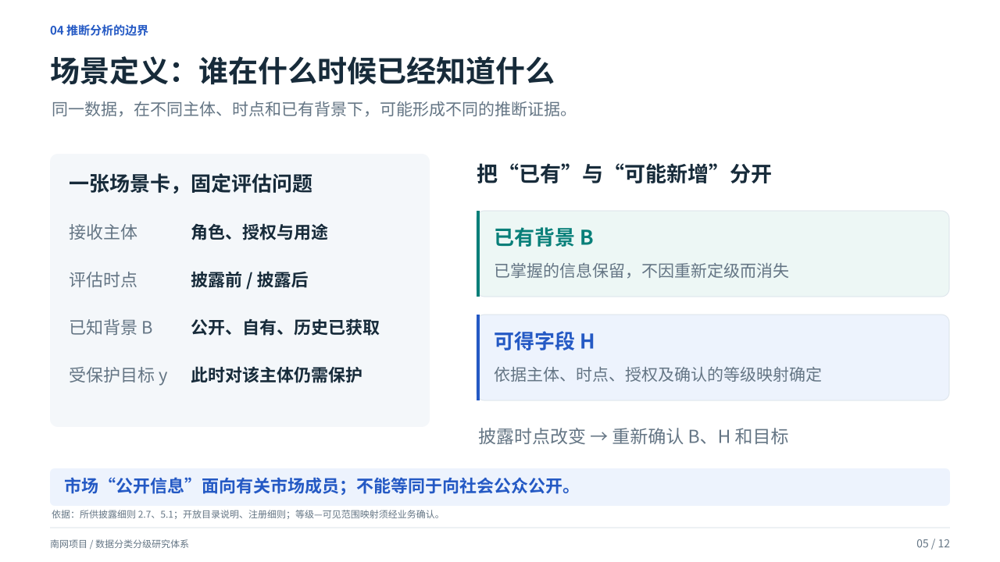
05 · 场景定义：谁在什么时候已经知道什么
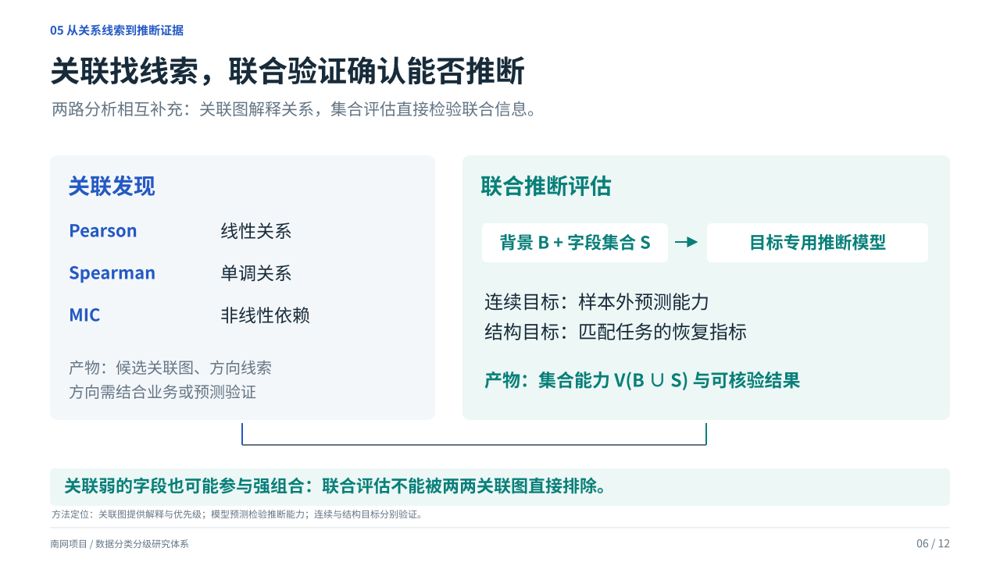
06 · 关联找线索，联合验证确认能否推断
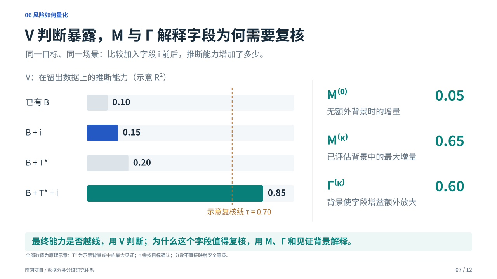
07 · V 判断暴露，M 与 Γ 解释字段为何需要复核
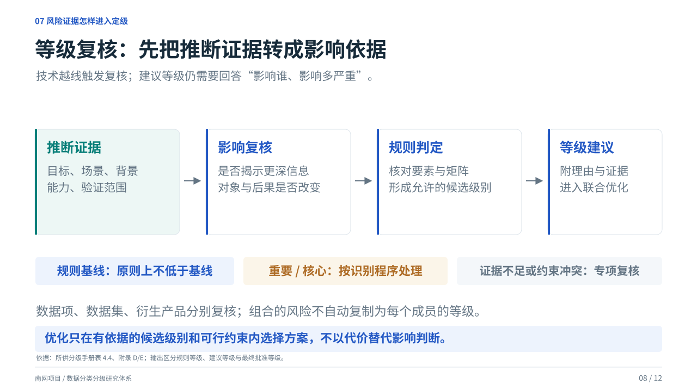
08 · 等级复核：先把推断证据转成影响依据
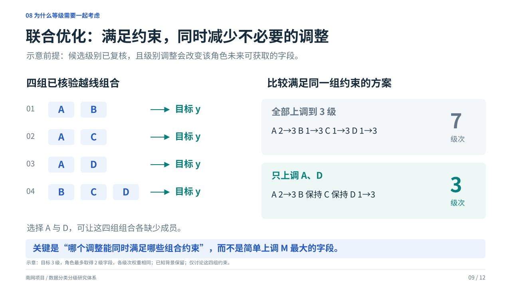
09 · 联合优化：满足约束，同时减少不必要的调整
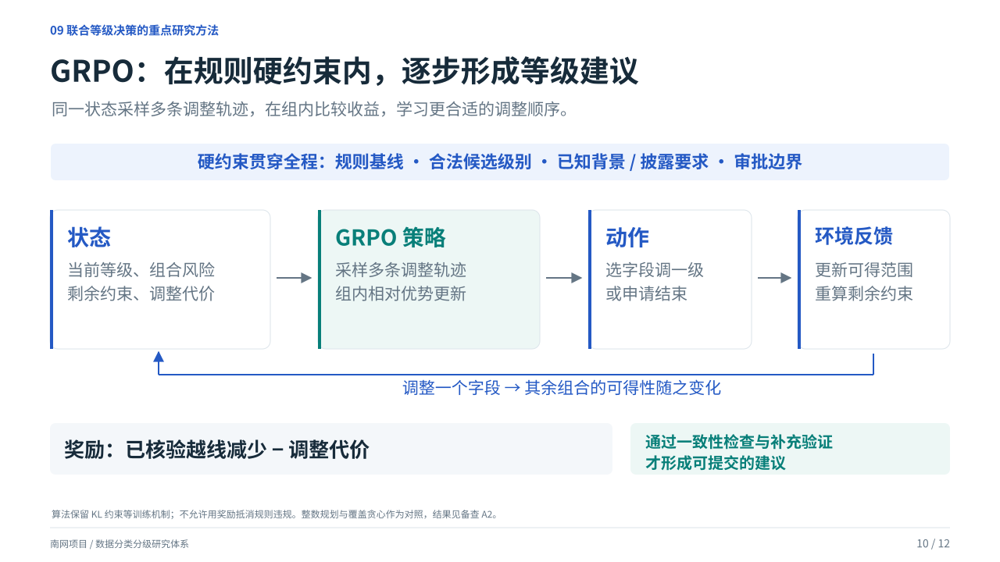
10 · GRPO：在规则硬约束内，逐步形成等级建议
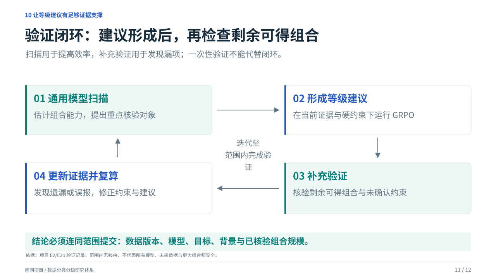
11 · 验证闭环：建议形成后，再检查剩余可得组合
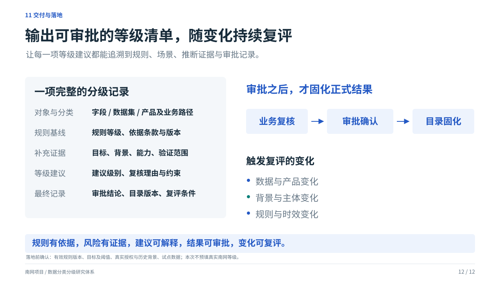
12 · 输出可审批的等级清单，随变化持续复评
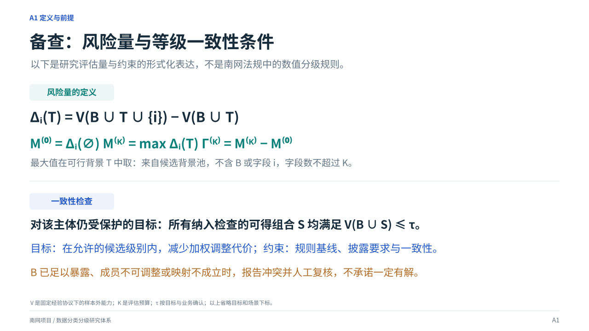
13 · 备查：风险量与等级一致性条件
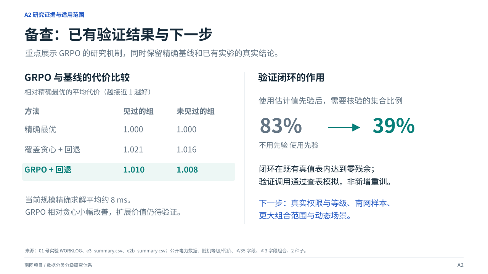
14 · 备查：已有验证结果与下一步